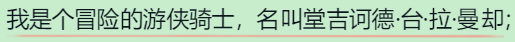
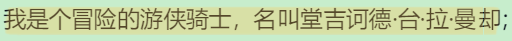
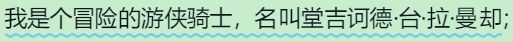
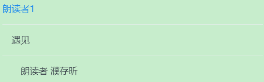

标注
一级标注是指被直线标注的文本：
输入框中的内容在导出标注时将会被添加到一级标注前面。如，若这里设置为两个星号(**)，则上图中的标注导出来后为**我是个冒险的游侠骑士，名叫堂吉诃德·台·拉·曼却。
一级标注是指被直线标注的文本：
输入框中的内容在导出标注时将会被添加到一级标注后面。如，若这里设置为两个星号(**)，则上图中的标注导出来后为我是个冒险的游侠骑士，名叫堂吉诃德·台·拉·曼却**。
二级标注是指被马克笔标注的文本：
输入框中的内容在导出标注时将会被添加到二级标注前面。如，若这里设置为两个星号(**)，则上图中的标注导出来后为**我是个冒险的游侠骑士，名叫堂吉诃德·台·拉·曼却。
二级标注是指被马克笔标注的文本：
输入框中的内容在导出标注时将会被添加到二级标注后面。如，若这里设置为两个星号(**)，则上图中的标注导出来后为我是个冒险的游侠骑士，名叫堂吉诃德·台·拉·曼却**。
三级标注是指被波浪线标注的文本：
输入框中的内容在导出标注时将会被添加到三级标注前面。如，若这里设置为两个星号(**)，则上图中的标注导出来后为**我是个冒险的游侠骑士，名叫堂吉诃德·台·拉·曼却。
三级标注是指被波浪线标注的文本：
输入框中的内容在导出标注时将会被添加到三级标注后面。如，若这里设置为两个星号(**)，则上图中的标注导出来后为我是个冒险的游侠骑士，名叫堂吉诃德·台·拉·曼却**。
标题
微信读书中的书通常最多只有三级目录：
其中排第一的标题(朗读者1)即为一级标题。
“一级标题前缀”中的内容在导出标题时将会被添加到一级标题前面，相应地，下方的“一级标题后缀”中的内容在导出标题时将会被添加到一级标题之后。如，若这里设置为一个井号加一个空格(# )，同时“一级标题后缀”设置为空，则上面的一级标题导出来后为# 朗读者1。
想法
想法也就是你平时阅读时在书中发表的想法。当你将前后缀设置为两个星号(**)时，导出的想法在 Markdown 中将会被加粗。
想法标注即想法所对应的书本内容。当你将想法标注前后缀设置为两个星号(**)时，导出的想法标注在 Markdown 中将会被加粗。
代码块
扩展支持复制书本中的代码块，你可以在这里设置代码块前后缀。
比如，当你将代码块前缀设置为```python同时将代码块后缀设置为```时，你复制得到的代码块在 Markdown 中会按照 python 的语法高亮显示。
有时你可能不希望导出的代码块前后包含任何内容，这时你可以将代码块前后缀设置为空。
正则替换
可通过添加正则替换模式替换标注字符串，模式需遵循以下格式：s/<pattern>/<replacement>/[<flags>]。
比如，你可以输入以下模式以匹配所有开头为“提示”的标注并为匹配到的标注加粗（两端添加**）：
s/^(提示.*)$/**$1**/。
下面是一些比较常用的模式：
-
为开头为"步骤x："(x为0到99中任意整数)的标注加粗：
s/^(步骤[0-9]{1,2}[:：].*)$/**$1**/。 -
为开头为数字加一点的标注（如"1．Flask与HTTP"加粗）：
s/^([0-9](\.\s?|．).*)$/**$1**/。 -
将图片标题（如"图2-5 404错误响应"）及表格标题（如"表1-1 Flask的依赖包"）导出为居中格式：
s/^(图[0-9]{1,2}-[0-9]{1,2} .*|表[0-9]{1,2}-[0-9]{1,2} .*)$/<p align='center'>$1</p>/。 -
将开头为"注意："、"附注："或"提示："的标注导出为居中格式：
s/^((注意|附注|提示)[:：].*)$/<p align='center'>$1</p>/。
注意：
- 选中正则匹配右方的选中框该正则表达式才会生效。
- 单个标注最多匹配一次，也就是说，一条标注在匹配到某个正则表达式并替换完毕后，将不再继续与其他正则表达式进行匹配。所以在添加正则匹配的时候，最好不要让一个标注能够被多个正则表达式匹配到。
- 因为正则匹配很容易影响导出效果，所以最好在对正则表达式进行充分测试后再使用正则替换。这是一个可供学习正则表达式的教程：learn-regex-zh。
其他
选中该选项之后，导出的标注（本章标注或是全书标注）中将包含你在书中留下的想法。
选中该选项之后，导出全书标注/热门标注时标注中将包含所有章节标题，即使该章节下没有标注/热门标注。
选中该选项之后，导出的热门标注中将包含每条热门标注的标记人数。
选中该选项之后，可在读书页开启右键菜单。在需要复制或另存读书页图片的时候很有帮助。
选中该选项之后，将会在 popup 中添加名为“统计”的按钮，点击该按钮可查看周、月阅读时长统计图。
选中该选项之后，将会在 popup 中添加名为“开发者选项”的按钮，点击该按钮可调用用于测试的某些函数。
在这里可设置选中文字后的动作。设置为“马克笔”则会在每次选中文字时自动点击“马克笔”以标注选中内容。设置为“复制”则在选中文字后自动复制选中内容。设置为“无”则关闭动作。